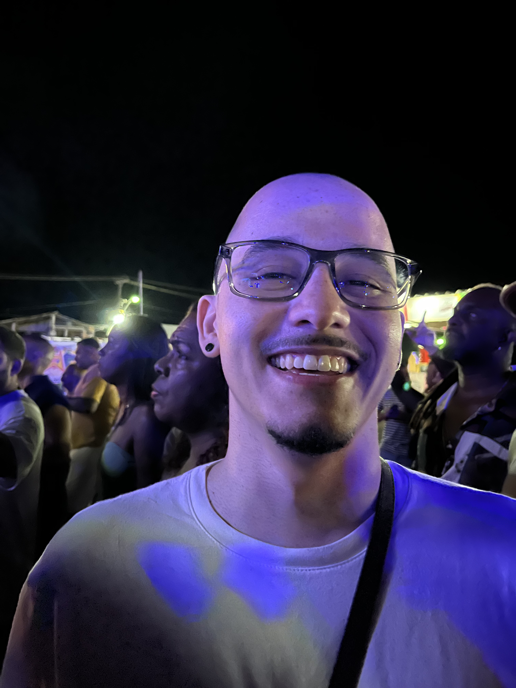
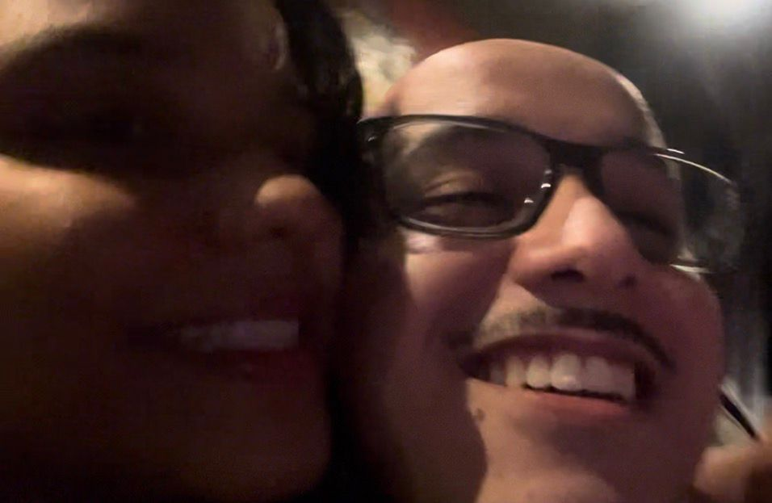
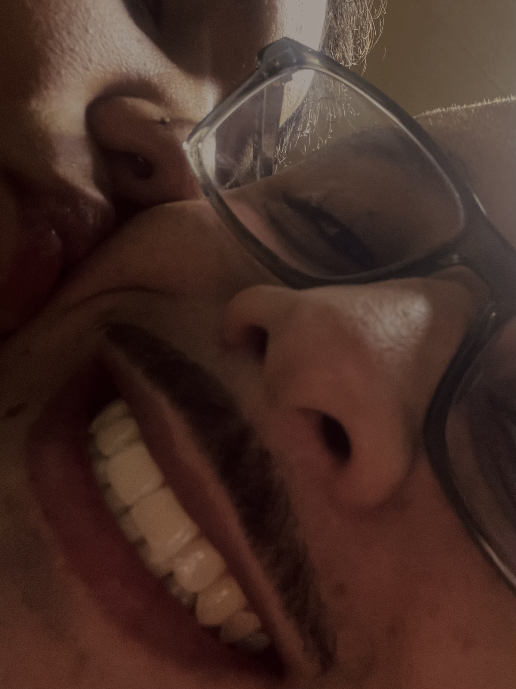
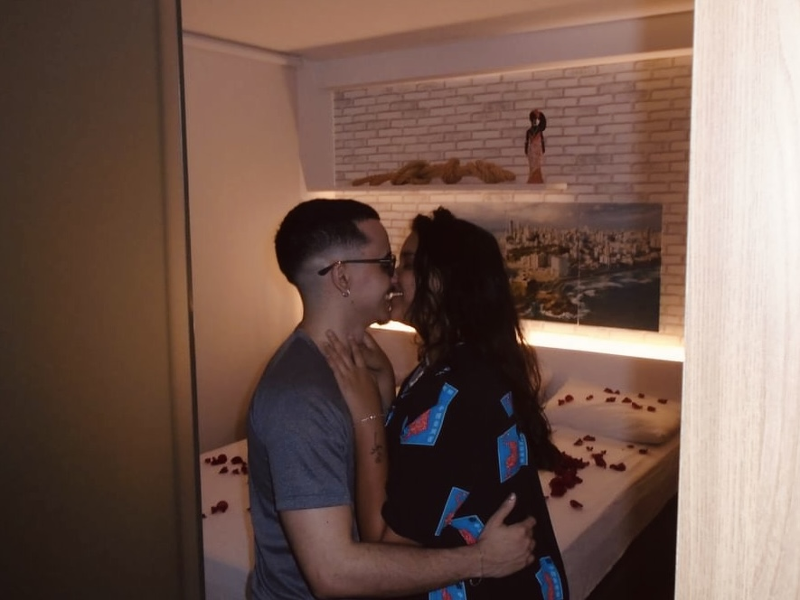
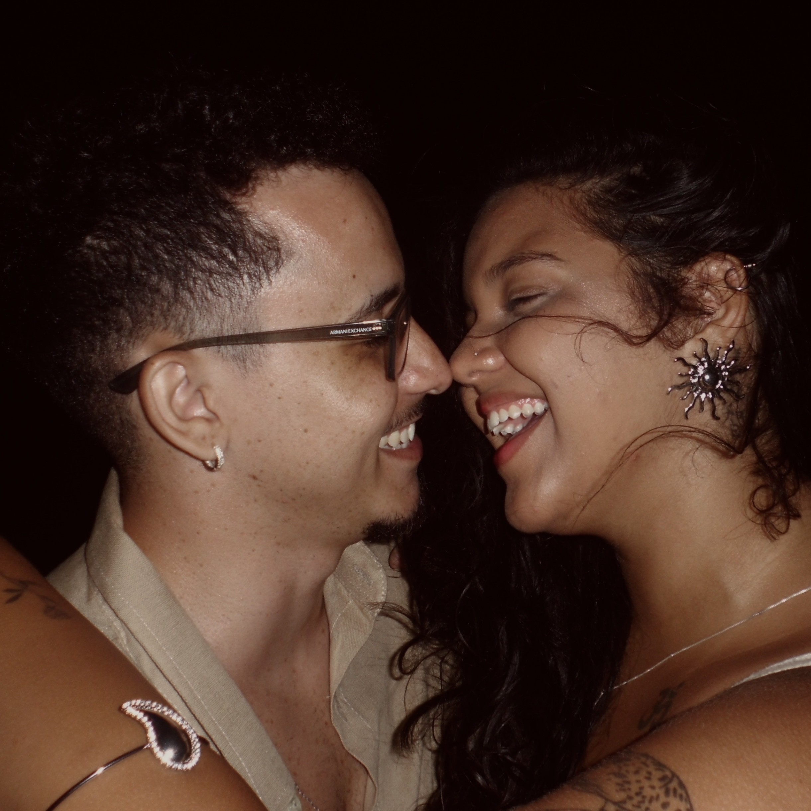
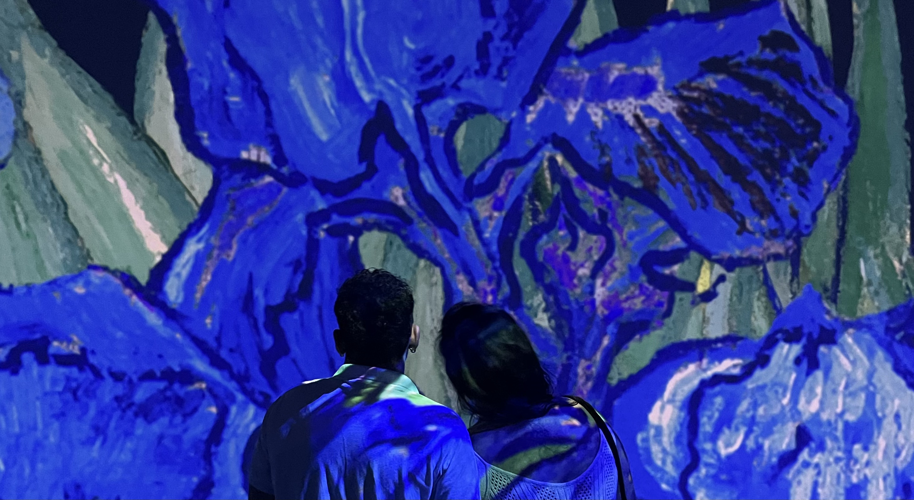
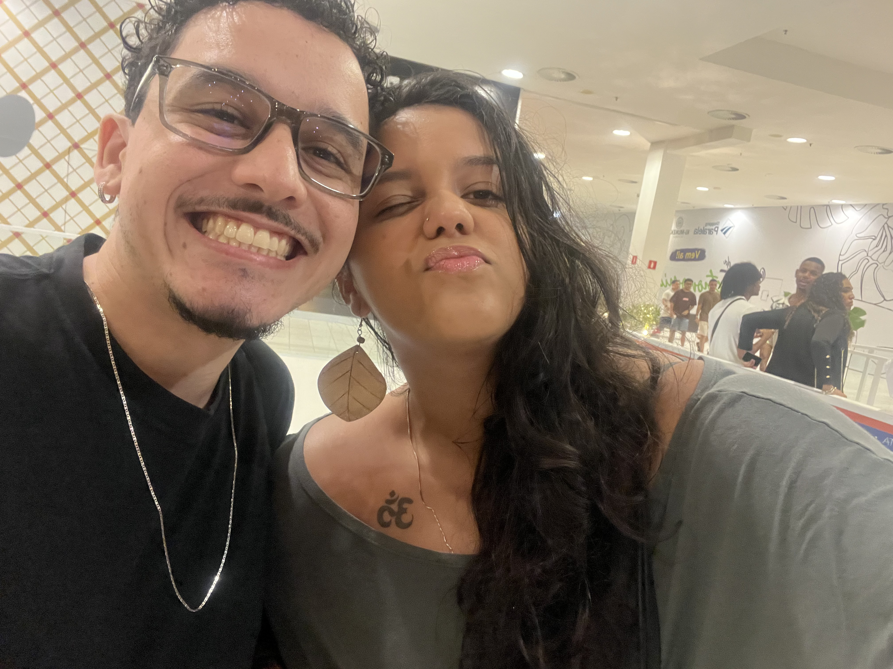
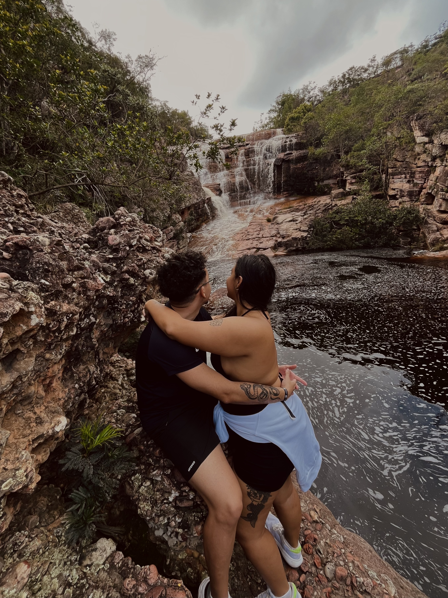
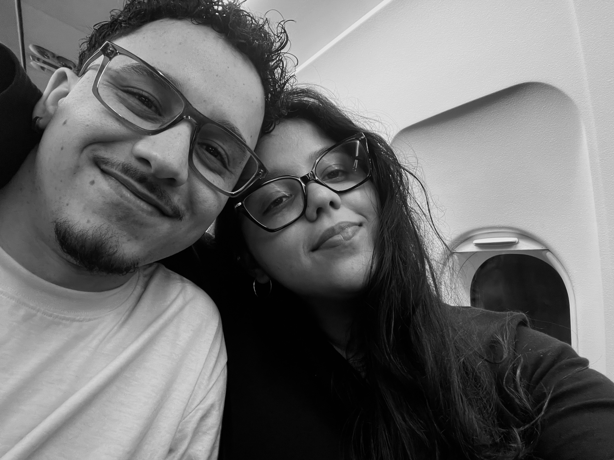
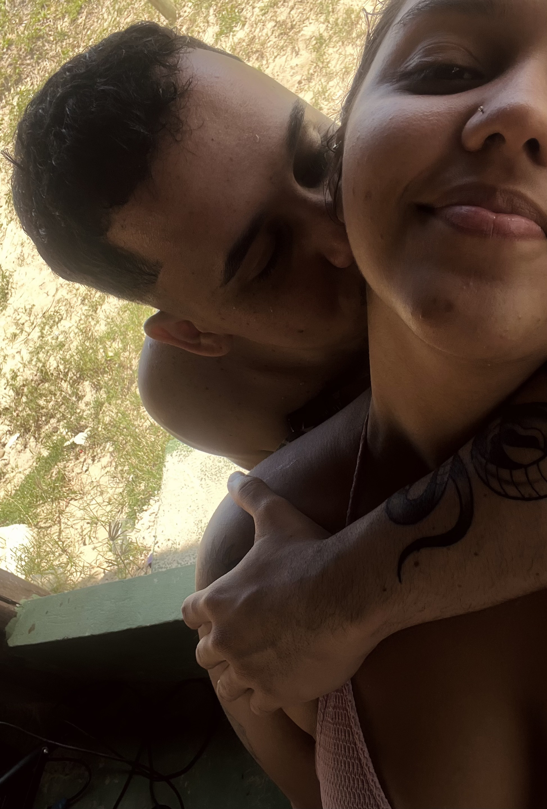

Mateus e Eduarda
Desde 14 de Setembro de 2024

O começo de tudo
24 de Junho de 2024São João, e eu não dava nada por aquela noite. Mas aí apareceu o seu sorriso, o mais lindo que já vi e mudou tudo. Tirei aquela foto na hora só para você se enxergar exatamente como eu te vejo. No dia seguinte, a gente no cinema vendo Harry Potter, e a verdade é que o filme era o que menos importava; a gente já estava ali, se olhando com cara de bobo. Lembro de voltar para casa e escutar Adore You e você não saía do meu pensamento.
O beijo ao som de um rock doido
05 de Julho de 2024O dia do nosso primeiro beijo. Foi aquele beijão ao som de um rock doido. Paramos no McDonalds depois. A gente riu tanto, e não tinha como ser diferente: tinha que ter essa nossa doideira logo de cara. É o nosso jeito, e eu não mudaria nada.


Embriagados de amor
Lembra dessa festa da faculdade? Você já estava lá, todo decidido, dizendo que ia casar comigo. Eu, morrendo de medo, dizia: "calma, daqui a uns anos!". A gente estava ali, naquela festa caótica, mas a real é que já estávamos era embriagados de amor um pelo outro. Foi ali que o "nós" começou a fazer sentido de verdade.
O Sim mais fácil
14 de Setembro de 2024Eu já suspeitava de algo, mas você me apareceu com o pedido mais lindo que alguém poderia criar. Ninguém nunca fez nada parecido por mim. Naquele momento, com todo aquele cuidado, eu me senti a mulher mais amada do mundo. Foi o "sim" mais fácil da minha vida.


O Primeiro de muitos
Nosso primeiro Réveillon juntos, o marco zero de tudo o que a gente ainda vai construir. Quero virar muitos e muitos anos do seu lado, do jeito que a gente é: sorrindo, nos amando e vivendo a nossa própria magia.
É como diz a música...
A gente tem tudo a ver 🤍




